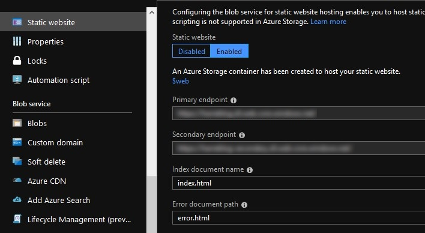
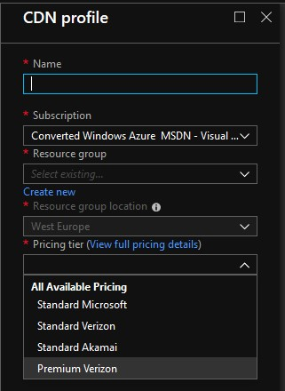
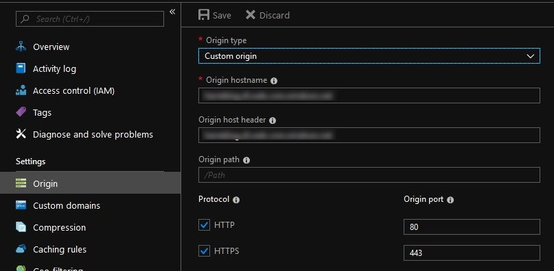
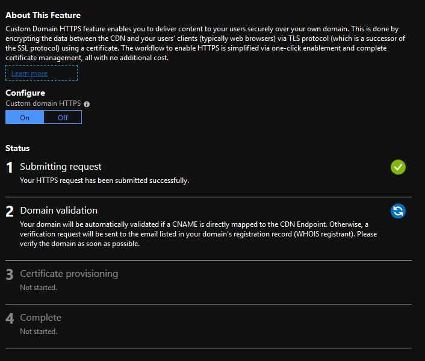
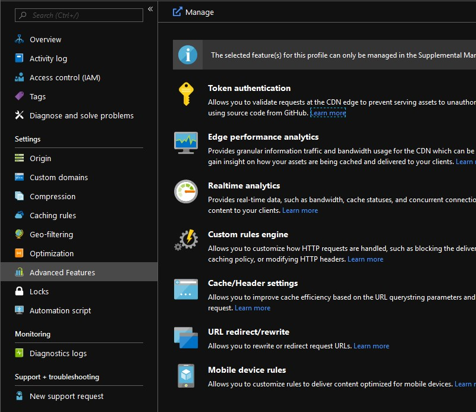
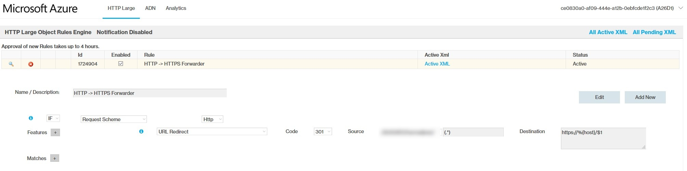

Setting up an Azure Storage static website
Not very long ago, Microsoft made the static website feature generally available on the Azure platform. What this means is that you can now publicly host content with Azure (blob) storage.
So in a few easy steps you can create a host for your angular/react/vue/(insert-client-side-web-thing-here)/static app. The docs are great but we'll have a look at what's what.
Please remember that there is no server-side processing for this hosting option! If you want to do server-side stuff, use an App Service instead.
After creating the storage and enabling the static website feature, you can upload index.html to the storage container (the default name is $web) and view it in the browser by pointing it to the containers primary endpoint.

The endpoint comes with its own certificate so you can use HTTPS right out of the gate. At this point you might consider adding a custom domain, but I quickly ran into the HTTPS problem. The available certificate does not include the custom domain you set up, so the browser will display an ugly 'This site is unsafe' warning when you view it in your browser.
To work around the domain TLS problem we can use a CDN, which is also available on Azure.
While creating the CDN service, take note of the pricing tier. The only tier that supports rules is the Premium Verizon tier.

The rule engine is needed later when we enable a custom domain on the CDN and add a certificate. The premium tier is, as the name implies, a little bit more expensive, but as we'll soon find out, we really need that rule engine.
With the CDN created, there is one last thing we need to change before we can set up the custom domain. By default, the CDN Endpoint uses the storage service root. While this is a valid location, it is not the location that serves our static content. To make the change, look at the Origin blade in the CDN Endpoint settings.

Change the Origin type to Custom and then set the public storage URL as the Origin hostname and Origin host header.
Any request to the CDN Endpoint can now reach the static content in the storage container.
After setting all this up, the static content should be available at the CDN address as well as the public storage URL.
The last steps are setting up a custom domain and adding a custom certificate. Before adding the custom domain, make sure you've added a CNAME record that links the custom domain to the CDN Endpoint URL. DNS updates may take some time to propagate so if it doesn't work after a few minutes, try again a little later.
After the domain is succesfully added, we can enable the custom certificate with just a click of a button. Open the custom domain properties and click the switch to On, then click Save.

Adding the certificate is an automated multi-step process that can take up to 8 hours to complete so give this one some time and check back every now and then to see if it completed.
With this all done, you now have:
- A place to host static content.
- A custom domain where the content is accesible.
- HTTPS!
But wait, when you browse to the non-HTTP endpoint you see an ugly 'This site is only accesible via HTTPS' warning page! Remember that rule engine from earlier? This is where we need it.
At the time of writing, there's no way in the standard price tier to redirect non-HTTP traffic to HTTPS, which is why we need the rule engine, which is only part of the premium (verizon) price tier.

Go to the CDN Endpoint details and open the Advanced Features blade and click the Manage button. It will open a new page where we can add traffic rules.
Open the HTTP Large menu and click Rules Engine.

To set up the HTTP to HTTPS forwarding rule, select the following things:
- IF
- Request Scheme
- Http
- Features
- URL Redirect
- 301
- Source
- (Select your storage/endpoint option)
- (.*)
- Destination
- https://%{host}/$1
Give the rule a nice name and hit save. As stated on the page, it can take a few hours so this might take a little while as well.
After all the waiting is done should now be redirected to the HTTPS endpoint with a valid certificate!
You can find all this in the docs of course, but this write up is a bit shorter and gathers all the pieces in one place.
I really hope they add an option to redirect all non-HTTP traffic to HTTPS to regular CDN options. plain ol' HTTP just isn't good enough anymore so I feel this should have been in there already. Hiding the more advanced things behind a premium is fine, but a basic feature like force HTTPS should be there for everyone. Especially with the existence of the one-click-no-extra-charge certificates!